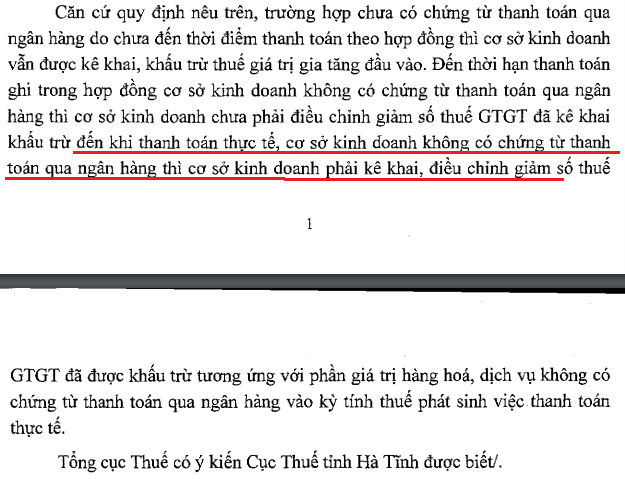

TSCĐ, Hàng mua – bán trả chậm, trả góp hạch toán như thế nào? Kế toán Diệu Tâm xin hướng dẫn cách hạch toán hàng mua – bán trả góp, trả chậm theo Thông tư 200 và Thông tư 133
1. Cách hạch toán mua hàng hóa, TSCĐ trả góp, trả chậm:
- Khi mua hàng hóa, vật tư, TSCĐ theo phương thức trả chậm, trả góp về sử dụng ngay cho hoạt động SXKD, ghi:
Nợ các TK 152, 153, 156, 211, 213 (nguyên giá - ghi theo giá mua trả tiền ngay)
Nợ TK 133 - Thuế GTGT được khấu trừ (1331, 1332) (nếu có)
Nợ TK 242 - Chi phí trả trước {phần lãi trả chậm là số chênh lệch giữa tổng số tiền phải thanh toán trừ (-) Giá mua trả tiền ngay trừ (-) Thuế GTGT (nếu có)}
Có TK 331 - Phải trả cho người bán (tổng giá thanh toán).
- Định kỳ, khi thanh toán tiền cho người bán, ghi:
Nợ TK 331 - Phải trả cho người bán
Có các TK 111, 112 (số phải trả định kỳ bao gồm cả giá gốc và lãi trả chậm, trả góp phải trả định kỳ).
- Định kỳ, tính vào chi phí theo số lãi trả chậm, trả góp phải trả của từng kỳ, ghi:
Nợ TK 635 - Chi phí tài chính
Có TK 242 - Chi phí trả trước.
2. Cách hạch toán hàng bán trả góp, trả chậm:
- Khi bán sản phẩm, hàng hoá theo phương thức trả chậm, trả góp thì ghi nhận doanh thu bán hàng và cung cấp dịch vụ của kỳ kế toán theo giá bán (chưa có thuế) trả tiền ngay, phần chênh lệch giữa giá bán trả chậm, trả góp với giá bán trả tiền ngay ghi vào tài khoản 3387 "Doanh thu chưa thực hiện", ghi:
Nợ TK 111, 112, 131
Có TK 511- Doanh thu bán hàng và cung cấp dịch vụ (giá bán trả tiền ngay chưa có thuế GTGT)
Có TK 333 - Thuế và các khoản phải nộp (3331, 3332).
Có TK 3387 - Doanh thu chưa thực hiện (phần chênh lệch giữa giá bán trả chậm, trả góp và giá bán trả tiền ngay chưa có thuế GTGT).
- Định kỳ, xác định và kết chuyển doanh thu tiền lãi bán hàng trả chậm, trả góp trong kỳ, ghi:
Nợ TK 3387 - Doanh thu chưa thực hiện
Có TK 515 - Doanh thu hoạt động tài chính.(lãi trả chậm, trả góp).
- Khi thực thu tiền bán hàng trả chậm, trả góp trong đó gồm cả phần chênh lệch giữa giá bán trả chậm, trả góp và giá bán trả tiền ngay, ghi:
Nợ các TK 111, 112,...
Có TK 131 - Phải thu của khách hàng.
- Đồng thời ghi nhận giá vốn hàng bán:
+ Nếu bán sản phẩm, hàng hoá, ghi:
Nợ TK 632- Giá vốn hàng bán
Có các TK 154, 155, 156, 157,...
+ Nếu thanh lý, bán BĐS đầu tư, ghi:
Nợ TK 632- Giá vốn hàng bán (giá trị còn lại của BĐS đầu tư)
Nợ TK 214 - Hao mòn TSCĐ (2147) (số hao mòn luỹ kế - nếu có)
Có TK 217- BĐS đầu tư.
Chú ý đối với hóa đơn hàng trả chậm, trả góp:
1. Giá tính thuế GTGT đối với hàng trả góp, trả chậm:
Theo khoản 7 điều 7 Thông tư 219/2013/TT-BTC:
"7. Đối với hàng hóa bán theo phương thức trả góp, trả chậm là giá tính theo giá bán trả một lần chưa có thuế GTGT của hàng hóa đó, không bao gồm khoản lãi trả góp, lãi trả chậm.
Ví dụ 31: Công ty kinh doanh xe máy bán xe X loại 100 cc, giá bán trả góp chưa có thuế GTGT là 25,5 triệu đồng/chiếc (trong đó giá bán xe là 25 triệu đồng, lãi trả góp là 0,5 triệu đồng) thì giá tính thuế GTGT là 25 triệu đồng."
2. Điều kiện khấu trừ thuế GTGT hàng trả chậm, trả góp:
Theo khoản 10 điều 1 Thông tư 26/2015/TT-BTC quy định:
"c) Đối với hàng hoá, dịch vụ mua trả chậm, trả góp có giá trị hàng hoá, dịch vụ mua từ hai mươi triệu đồng trở lên, cơ sở kinh doanh căn cứ vào hợp đồng mua hàng hoá, dịch vụ bằng văn bản, hoá đơn giá trị gia tăng và chứng từ thanh toán qua ngân hàng của hàng hoá, dịch vụ mua trả chậm, trả góp để kê khai, khấu trừ thuế giá trị gia tăng đầu vào. Trường hợp chưa có chứng từ thanh toán qua ngân hàng do chưa đến thời điểm thanh toán theo hợp đồng thì cơ sở kinh doanh vẫn được kê khai, khấu trừ thuế giá trị gia tăng đầu vào.
Trường hợp khi thanh toán, cơ sở kinh doanh không có chứng từ thanh toán qua ngân hàng thì cơ sở kinh doanh phải kê khai, điều chỉnh giảm số thuế GTGT đã được khấu trừ đối với phần giá trị hàng hóa, dịch vụ không có chứng từ thanh toán qua ngân hàng vào kỳ tính thuế phát sinh việc thanh toán bằng tiền mặt (kể cả trong trường hợp cơ quan thuế và các cơ quan chức năng đã có quyết định thanh tra, kiểm tra kỳ tính thuế có phát sinh thuế GTGT đã kê khai, khấu trừ)."
Như vậy:
- Đến thời hạn thanh toán theo hợp đồng, nhưng DN vẫn chưa có chứng từ thanh toán qua ngân hàng thì cũng chưa phải điều chỉnh giảm số thuế GTGT đã kê khai khấu trừ.
- Chỉ điều chỉnh giảm thuế GTGT được khấu trừ khi DN đã thực hiện việc thanh toán nhưng không có chứng từ thanh toán qua ngân hàng. (Kê khai giảm vào kỳ phát sinh việc thanh toán thực tế)
Chi tiết xem tại Công văn 06/TCT-CS ngày 3/1/2017 của Tổng cục Thuế:

Công ty kế toán Diệu Tâm xin chúc các bạn thành công!